多样的经典密码和隐藏的秘宝
下面我们讲解几种在前面的章节中曾经提到，但并没有展开详述的经典加密术。每种密码都是不同加密技巧的典型代表，大家也可以作为消遣来读。我们选取了一些经典密码，最后是美国作家埃德加·爱伦·坡的虚拟解密故事，故事完美阐释了频率分析。
这个密码是有详细记载的最古老的密码之一，先画一个5×5的表格，从字母表中选取5个字母，并以这5个字母作为表格横和纵的表头，然后在表格中填入字母。这套密码的构成方式是，每个字母对应表格中行和列中的字母对。起初，希腊字母只有24个，而英文字母有26个，因此字母I和J通常算作一个。为简明起见，此处用字母A-E作为表头。表中填充字母的顺序要由收发双方达成一致。我们以下页表为例进行解释：
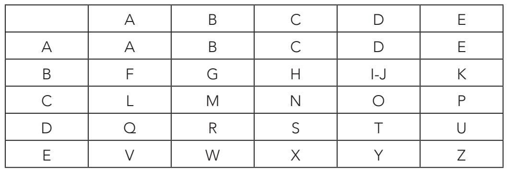
注意加密字母有25（即5×5）个。加密字母表也可以按照数值（如1、2、3、4、5）为表头加密。这样，表格如下所示：
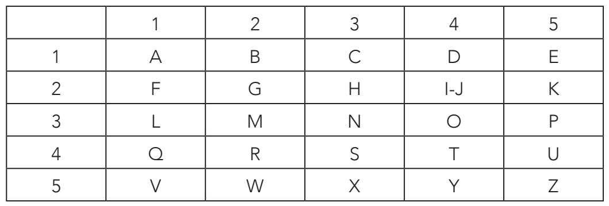
我们分别用两个版本的加密密码来认识波里比阿密码。明文信息是“BLANKS”（空白）。按照第一个以字母为表头的密码表加密如下：
B由字母对AB代替。
L由字母对CA代替。
A由字母对AA代替。
N由字母对CC代替。
K由字母对BE代替。
S由字母对DC代替。
信息加密之后为：“ABCAAACCBEDC”。如果用数值加密，步骤同上，得到的加密信息是：123111332543。
这个密码由荷兰人约斯特·马克西米利安·布龙克霍斯特（Jost Maximilian Bronckhorst）发明，他是格伦斯菲尔德地区的伯爵，密码因此得名，于17世纪在欧洲使用。它是一种多表加密法，类似于德·维吉尼亚方阵，但使用难度稍小，保密性也略差。我们根据下表加密一条信息：
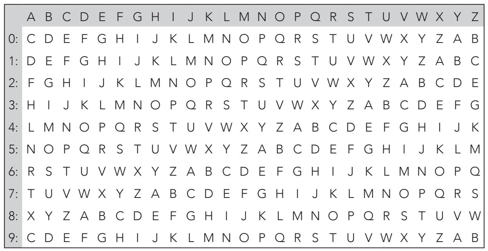
首先，从0—9随机选择一个数字代替要加密的信息中的每个字母。如果明文是“MATHEMATICAL”（数学的），就随机选择12个数字，如：1、2、3、4、5、6、7、8、9、0、1、2。这一串数字就是密钥。然后参照上页表，把信息中的每个字母用表中对应数字行的字母替换：
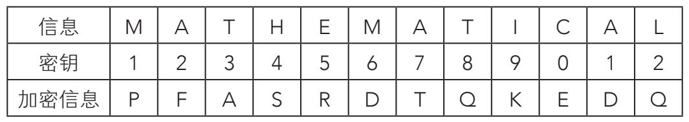
M加密为P，其他同理。整个信息加密之后是“PFASRDTQKEDQ”。信息中的三个A分别加密为F、T和D。一般来说，暴力破解和频率分析都无法破解多表加密法，这套加密系统同样如此。对于26个字母的字母表来说，格伦斯菲尔德的密钥数为26!×10=4.03×1026个。
该密码由莱昂·普莱费尔男爵和查尔斯·惠特斯通爵士（他同时是电报的发明者）创造。两人亦邻亦友，都爱好密码学。这种方法是它杰出“前辈”——波里比阿密码的翻版，也用了五行五列的表格。第一步，根据五个不同的字母，将明文中的每个字符替换为字母对。此处以密码“JAMES”为例。如果是26个字符的字母表，会生成如下加密表：
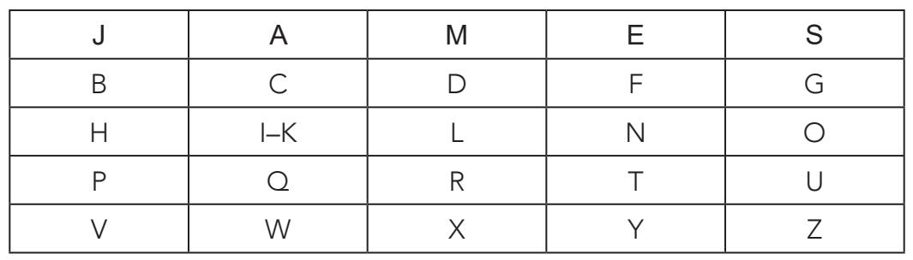
然后，将明文信息分为字母对或“双字母组合”。所有字母对的两个字母必须不同，而且如果出现重复，我们就用字母x替代。如果末尾字母落单，也用x补充，组成一个字母对。
比如，明文信息为“TRILL”（颤音），分为字母对为：
TR IL Lx
单词“TOY”（玩具）分为：
TO Yx
把明文信息分为字母对的形式后，就可以开始加密了，要考虑三种情况：
第一种情况，字母对的两个字母在同一行。
第二种情况，字母对的两个字母在同一列。
第三种情况，上述都不符合。
如果是第一种情况，字母对中的字符就由每个字母右侧的字母代替（即依照字母表顺序的“下一个”）。这样，字母对JE加密为AS：
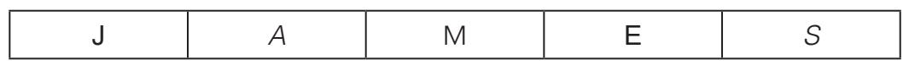
如果是第二种情况，字母对中的字符就由该字母表中正下方的字母代替。以字母对ET为例，加密为FY，TY加密为YE：
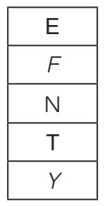
如果是第三种情况，加密字母对中的第一个字母时，要观察它所在的行，直到找到包含第二个字母的列为止；明文的密码在行列相交处查找。加密第二个字母，要观察它所在的行，直到找到第一个字母所在的列为止；同样，明文的密码在相交处查找。
以字母对CO为例，C加密为G，O则为I或K。
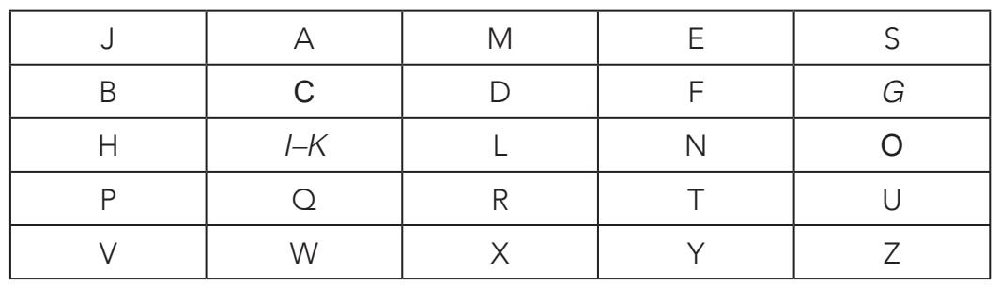
用密钥JAMES加密信息“TEA”（茶），步骤如下：
将其分为字母对：TE Ax。
T加密为Y。
E加密为F。
A加密为M。
x加密为W。
加密后，信息为“YFMW”。
埃德加·爱伦·坡的小说《金甲虫》的主人公威廉·罗格朗破解了一个写在羊皮纸上的密码，由此发现了传说中的宝藏。罗格朗破解密码的步骤用的是一种统计方法，以英文文本中字母出现的频率为基础。加密信息如图所示：
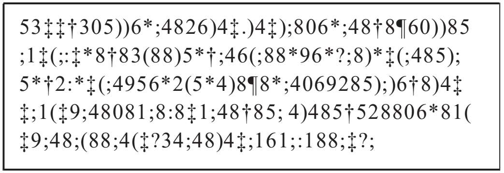
罗格朗一开始假设原始信息是用英文写成的。英文中出现频率最高的字母是e。然后，字母按出现频率从高到低排列为：a,o,i,d,h,n,r,s,t,u,y,c,f,g,l,m,w,b,k,p,q,x,z。
我们的主人公根据密文列出了一个表格。第一行是加密信息的字符，第二行是每个字符出现的频率：
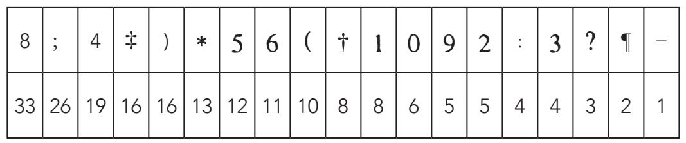
因此，8很有可能就是字母e。接着，他按照出现频率，将常见单词the翻译为字符“;”、“4”和“8”。
这样一来，他就知道术语“; (88”表示的是“t(ee”，经过推测得知，“(”可能为r，毕竟tree是词典中最有可能的单词。最终，他用同样机智的解密技巧，再加上耐心，得出了部分加密字母表：
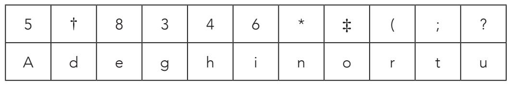
虽然不多，但足够译解信息了，译解后的信息为：
A good glass in the bishop's hostel in the devil's seat.
forty-one degrees and thirteen minutes northeast and by north.
main branch seventh limb east side shoot from the left eye of the death's-head.
a bee line from the tree through the shot fifty feet out.
质数和质数在密码学中的价值
“真正的数学不会影响战争的结果。至今，还没有数学理论曾为战争服务过。”
戈弗雷·H.哈代，《一个数学家的自白》（1940）
为译解一条信息，密码能够逆向操作至关重要。前文讲仿射密码时，我们已经知道，有一个方法能够保证这一点，那就是质数模。而且，质数乘积构成了一个不可逆的函数。也就是说，一旦相乘，若再想求出原始因数就会非常困难。
这一特点使得这种运算成为基于对称密钥的加密系统（如RSA算法）的有效工具，转而构成了公钥密码学的基础。让我们更为详细地认识一下质数与密码学的交集，并通过学习RSA正常的数学运算，对此进行证明。
质数是自然数的子集，是指所有大于1的只能被自己和1整除的自然数。数学的一个基本定理确定，所有大于1的自然数通常都可以用质数幂相乘的方式表示，而且这种表示（分解）是独一无二的。例如：
20=22×5
63=32×7
1 050=2×3×52×7
除了2之外所有质数都是奇数，唯一两个连续的质数是2和3。两个相邻的奇数，即相差2的质数（如17和19）叫作“孪生质数”。梅森质数和费马质数同样也很有趣。
有一类质数叫作梅森质数，它加1之后，结果是2的幂。例如7就属于梅森质数，因为7+1=8=23。
前8个梅森质数如下：
3；7；31；127；8 191；131 071；524 287；2 147 483 647
时至今日，我们只知道40个左右的梅森质数。最大的是个超大数字：243 112 609-1，发现于2008年。通过比较，整个宇宙中的元素粒子数大约小于2300。
费马质数形式如下：
Fn=22n+1，其中n是自然数
我们只知道5个费马质数：3(n=0)、5(n=1)、17(n=2)、257(n=3)和65 537(n=4)。
费马质数是以它的发现者、著名的法国法学家和数学家皮埃尔·德·费马（Pierre de Fermat，1601-1665）的名字命名的。这位法国数学家在质数相关方面有大量额外发现，具有重要意义。费马小定理就是比较出名的一个，定义如下：
如果p是质数，那么对于任何整数都符合ap≡a(mod.p)
后面将会说到，这个结论对于现代密码学有重要意义。
与模运算紧密相关的另一个成果叫作“裴蜀定理”。按照裴蜀定理，如果a和b是正整数，且gcd(a,b)=k，则两个整数p和q满足：
pa+qb=k
在gcd(a,b)=1的特殊情况下，可以断言整数p和q符合
pa+qb=1
如果用模n计算，可以确定，若gcd(a,n)=1，则一定存在符合公式pa+qn=1的整数p和q。从模n推测，我们得出qn=0，根据这些，可以总结出存在符合pa=1的p，也就是说a关于模n存在倒数，就是p。
那么，对模n具有倒数的质数数量就等于满足gcd(a,n)=1且小于n的自然数a的数量。这样的数叫作欧拉函数，用φ(n)表示。
如果在质数中对n的分解满足，则：
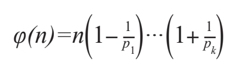
假设n=1600=2652，就能得出：
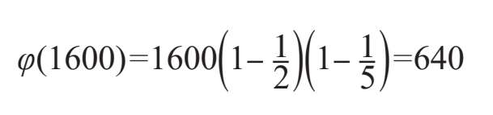
再稍微调整一下，如果条件是n为质数，则a的任何值都满足gcd(a,n)=1，因此，a的任何值都有对模n的倒数，因此φ(n)=n-1。
我们花点时间，回想一下目前得出的最重要的结论：
1.φ(n)叫作欧拉函数，表明小于n的数字主要取决于n。
2.如果p和q都是质数，且符合n=pq，那么：
φ(n)=(p-1)(q-1)
3.根据费马小定理，我们知道如果a是大于0的整数，且p是质数，就能得出关系式ap≡a(mod.p)，同样可以得出ap-1≡1(mod.p)。
剩下的就是根据欧拉公式增加最后的部分。欧拉断言：
4.如果gcd(a,n)=1，那么我们就能确定公式aφ(n)≡1(mod.n)。
有了以上知识，现在可以给大家介绍RSA算法加密过程背后的数学论点了。
设RSA算法用数值表示的信息为m，且p和q是质数，满足n=p·q。e为满足gcd(e,φ(n))=1的任意值，d是对模φ(n)的n的倒数[因为gcd(e, φ(n))=l，所以我们知道d存在]。因此：
d·e≡1(mod.φ(n))
加密信息M根据M≡me(mod.n)加密。该算法假定原始信息m根据m=Md≡(me)d(mod.n)获取。验证了这个方程，就相当于证明了RSA的有效性。为验证这点，我们把欧拉公式与费马小定理进行结合。
考虑两种情况：
1.根据欧拉公式，如果gcd (m, n)=1，则mφ(n)≡1(mod.n)。
我们从等同于e·d-1≡0(mod φ(n))关系式开始，存在一个整数k，符合e·d-1=k·φ(n)，也就是e·d=k·φ(n)+1。有了这个公式，运用欧拉公式，我们得出公式
(me)d=me·d=mk·φ(n)+1=mk·φ(n)·m=(mφ(n))k·m=1km(mod.n)==m(mod.n)
这就是我们要求的结果。
2.如果gcd(m,n)↑1，且n=p·q，则m只有一个因数，仅为p，仅为q，或两者同时。
在第一种情况中：
a）m是p的倍数，也就是说，存在一个整数r满足m=r·p。因此mde≡0(mod.p)，且最后：mde≡m(mod.p)，换句话说，存在满足下列条件的A：
mde-m=Ap 表达式一
在第二种情况中：
b）我们得出公式：
(me)d=me·d=mk·φ(n)+1=mk·φ(n)·m=(mφ(n)) k·m≡≡(m(q-1))k(p-1)·m(mod.n)=m
gcd(m,n)=p，(m,q)=1，根据费马小定理m(q-1)≡1(mod.q)
应用到初始方程：
(me)d=me·d=mk·φ(n)+1=mk·φ(n)·m=(mφ(n)) k·m≡≡(m(q-1))k(p-1)·m(mod.n) =1k(p-1)m≡m(mod.q)
从中我们得出结论，存在数值B满足
mde-m=Bq 表达式二
从表达式一和二中，我们可以确定p·q=n除尽mde-m，因此mde-m≡0(mod.n)。
考虑q的过程是类似的。如果m同时是p和q的倍数，这种情况下，结果就简单了：
(me)d≡m(mod.n)
这就是RSA算法加密法。